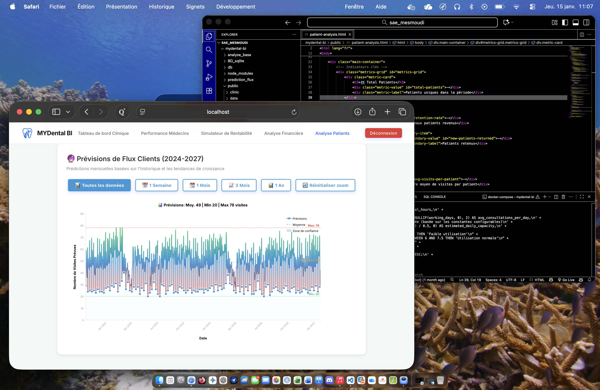

Le but de ce projet était de faire évoluer une application web existante de gestion d'un cabinet dentaire, en ajoutant des fonctionnalités décisionnelles pour aider les gestionnaires à prendre des décisions éclairées basées sur les données collectées. Nous avons travaillé en groupe de quatre personnes pour analyser les besoins, concevoir les nouvelles fonctionnalités, et les implémenter dans l'application.
Nous avons exploité la méthode Agile Scrum pour organiser notre travail en sprints d'une semaine. Chaque membre de l'équipe avait des rôles spécifiques. Nous avons mis en place un système de branche Git sécurisé avec validation par pull request pour assurer la qualité du code. Nous avons tenu des réunions quotidiennes pour suivre l'avancement du projet et résoudre les obstacles rencontrés. La collaboration et la communication ont été essentielles pour assurer le succès du projet.
L'une des principales difficultés a été de comprendre l'organisation générale des données, la base étant très complexe et volumineuse. Nous avons dû passer beaucoup de temps à analyser la structure de la base de données MariaDB et à identifier les relations entre les différentes tables. De plus, nous avons rencontré des défis techniques liés à l'intégration des nouvelles fonctionnalités dans l'application existante, nécessitant une bonne coordination au sein de l'équipe.
Grâce à ce projet, j'ai renforcé mes compétences en analyse de données, en conception de bases de données relationnelles, et en développement web avec JavaScript. J'ai également amélioré mes compétences en gestion de projet Agile, en communication au sein d'une équipe, et en utilisation de Git pour le contrôle de version. Ce projet m'a permis de mieux comprendre les défis liés à l'évolution d'une application complexe et m'a préparé à travailler sur des projets similaires à l'avenir. J'ai personellement conçu un outil de prédiction de données par Machine learning Random Forest pour prédire les flux clients.
Notre travail nous a valu la note de 19/20.